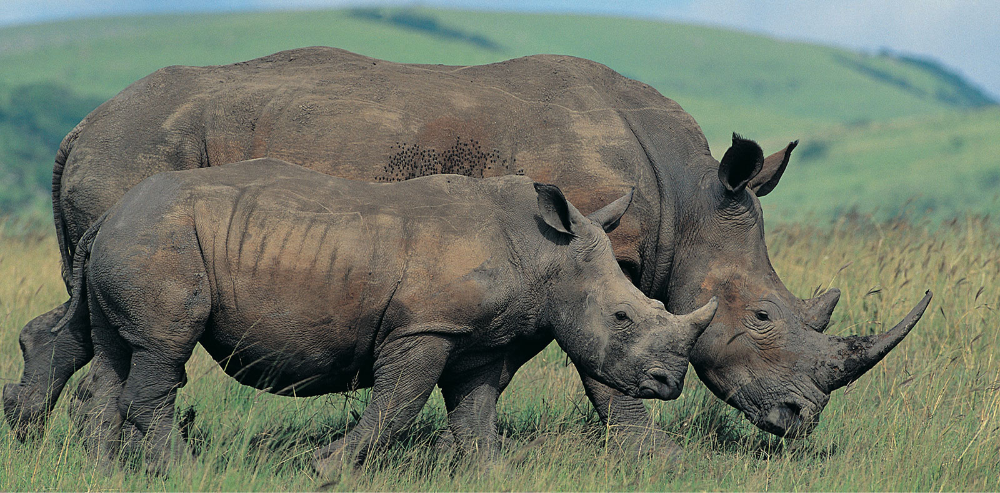

Rhino Gaudians
Rhino Gaudians is a non-governmental organization (NGO) dedicated to the conservation and protection of rhinoceroses across the African continent. Our mission is to safeguard these magnificent creatures from extinction by combating poaching, preserving natural habitats, and promoting community involvement in conservation efforts. Through research, advocacy, and education, we strive to ensure that rhinos continue to thrive in their natural environments for generations to come.
Vision: To see a future where rhinos roam freely and securely in Africa’s wilderness, coexisting peacefully with local communities.
Impact: Rhino Gaudians Africa has successfully reduced poaching incidents in key protected areas, leading to a steady increase in rhino populations. Our community outreach programs have educated thousands of individuals, fostering a sense of pride and responsibility in protecting their natural heritage. We have also contributed to the establishment of new rhino sanctuaries, providing safe havens for these endangered animals.